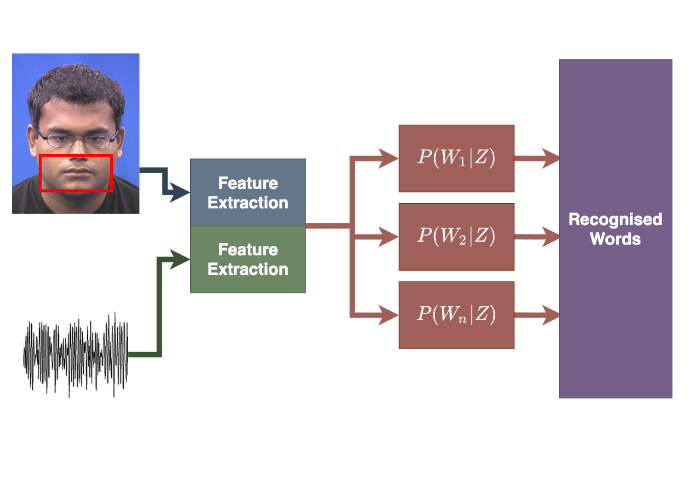

Content
- Speech recognition models
- Visual Features
- Image segmentation
- Point distribution models
- Fourier descriptors
Audiovisual Processing CMP-6026A
Dr. David Greenwood
The task of a speech recogniser is to determine the most likely word sequence given a new sequence of (acoustic) feature vectors.
An elegant way to compute this is using hidden Markov models.
\[ P(W | Y) = \frac{P(Y | W) P(W)}{P(Y) } \]
Learn the parametric model from training data, and use to estimate the probabilities.

Combine two modalities using:
Late integration builds two separate models and weights their probabilities to provide the recognised word sequence.
Has been shown to offer better performance than early integration.
Not straightforward to weight output probabilities.
An investigation of HMM classifier combination strategies for improved audio-visual speech recognition. Lucey et al. 2001
Concatenate the acoustic and visual models to form a single model.
Visual features often need interpolation to align with the acoustic features.

MFCCs are the standard features used in acoustic speech recognition.
Typical features include:

For any form of visual feature extraction, some form of localisation is required.
Where in the image is the face?
Where are the facial features of interest?
MATLAB has an implementation of the Viola Jones face tracker.
Shape features might include:
There is a trade-off between ease of extraction and the amount of information extracted.
We need a method for describing specific shapes in images.
An edge detector will locate edges in an image.
Which belong to the object of interest?
How are these allowed to vary as the object deforms?
Can we represent shapes using the image coordinates of the edge pixels?
We could, but the same shape in two locations will have different coordinates.
The coordinates describe the shape in the image coordinate frame, so they encode the shape and the location of the shape.
We are not interested in where the shape is — just the shape itself.
The primary problem is how to segment the lips from the background to extract a representation of the shape that is independent of image location.
A pre-processing stage of feature extraction identifies the region of the image that corresponds to the mouth.
This results in a binary mask, which is 1 if a pixel represents the mouth and 0 otherwise.
The goal of image segmentation is to classify each pixel as being either foreground or background.
We require three things:
Which colour-space should be used?
\[I = \left[\frac{r}{r+b+g} \frac{g}{r+b+g} \frac{b}{r+b+g}\right]\]
What colour do we want to segment out?
Find the mean colour of a lip pixel:
\[\begin{bmatrix} \mu_{r} \\ \mu_{g} \\ \mu_{b} \end{bmatrix} = \mu_{c}\]
Find the Euclidean distance between each pixel in the image, \(~I_{i, j}\), and the mean lip pixel colour \(\mu_{c}\).
\[D_{i, j} = \sqrt{\sum{(I_{i, j} - \mu_{c})^2}}\]
\[D_{i, j} = \sqrt{\sum{(I_{i, j} - \mu_{c})^2}}\]
A better distance metric might consider the variance of the lip pixels rather than just the mean, e.g. Mahalanobis distance.
Threshold the distance to segment lips from the background.
\[T_{i, j} = \begin{cases}1 ~ if ~ D_{i, j} < \tau \\ 0 ~ otherwise \end{cases}\]
This approach assumes that there is nothing in the image that is the same colour as the lips, otherwise there is nothing to tell these regions apart.
Often do other pre-processing (e.g. Viola-Jones face detector) first.
The matte will still contain spurious pixels, which might need cleaning up using morphological filtering.
From the binary image we can extract features such as:
Automated approaches are attractive as there is no manual effort. However:
Semi-automated approaches are generally more robust.
A generative statistical model of the variation of the shape of an object.
Use Principal Component Analysis (PCA) to model the variation in the coordinates of a set of landmark points.
The PDM can represent complex shapes with just a few parameters.
You can use an Active Shape Model (ASM) or Active Appearance Model (AAM) to automatically locate the landmarks (facial tracking).
This model requires training.
A shape is represented by a set of landmarks located along the shape boundary.
I provide a tool to annotate landmarks here: https://github.com/davegreenwood/face-landmark-tool

Manually hand label a selection of images from a training set.
All examples must have the same number of landmarks and be labelled in the same order.
Sufficient images must be labelled to capture the expected range of variation.
A shape is the concatenation of the \(x\) and \(y\) coordinates of the landmarks:
\[X = \{x_1, x_2, \dots, x_n, y_1, y_2, \dots, y_n\}^T \]
The consistency in the labelling ensures the elements of these vectors have the same meaning.

The coordinates describe the shape in the image coordinate frame.
The same shape at different locations results in a different shape vector.
We need to normalise shapes for translation, scale and rotation. This can be done using Procrustes analysis.
Given the aligned shapes, compute a model that describes the variation in shape.
A linear model of the variation can be found using Principal Components Analysis (PCA).
The model is in the form:
\[x = \overline x + \mathbf{P}_{s} \mathbf{b}_{s}\]
where \(x\) is a shape, \(\overline x\) is the mean shape, the matrix \(\mathbf{P}_{s}\) describes the variation in shape, and \(\mathbf{b}_{s}\) are the parameters that represent a shape instance.
The objective of PCA is to capture as much of the variation in as few dimensions as possible.
Find line of “best fit” through the data, then line of “next best fit” which is orthogonal to the first…
Repeat for however many dimensions your data has
Since the dimensions must be orthogonal, all we have done is rotate the axes to better align with the data.
In doing this:
The original data can be approximated as some distance along P1 from the centre of the data cloud.


To project a data point onto a new axis:
\[\mathbf{b}_{s} = \mathbf{P}_{s}^{T} (x - \overline x )\]
To reconstruct the data point from the features:
\[x \approx \overline x + \mathbf{P}_{s} \mathbf{b}_{s}\]
This is only an approximation since the data are truncated to lie on just the principal component(s).
Note, in the previous example we have moved from a 2D problem to 1D so the representation is more compact.
Staying within the limits of the data means new examples can be generated — this is a generative model.
Algorithm:
Matlab has implementations of both PCA and of Eigenvector/Eigenvalue decomposition.
For modelling shapes, an n-point shape is represented as a 2n element vector:
\[X = \{x_1, x_2, \dots, x_n, y_1, y_2, \dots, y_n \}^{T}\]
Can be thought of as a single point in a \(\mathbb{R}^{2n}\) space.
PCA can be applied to the \(\mathbb{R}^{2n}\) data, rotating the \(2n\) axes to best fit to the data cloud in \(\mathbb{R}^{2n}\) space.
We retain only the meaningful variation - often resulting in considerable compression.
Given a PDM, and a new image, how do we fit the PDM to the facial pose in the new image?
Sample the pixels around each landmark in the training set, and look for the region in the image that best matches the sample.
Refine the fit by forcing the shape to lie within the model space.
More efficient if provided an approximate starting point.
Further reading: Active Shape Models
The lip boundary provides a closed contour.

The curve can be decomposed into a Fourier series (refer back to the audio processing slides).